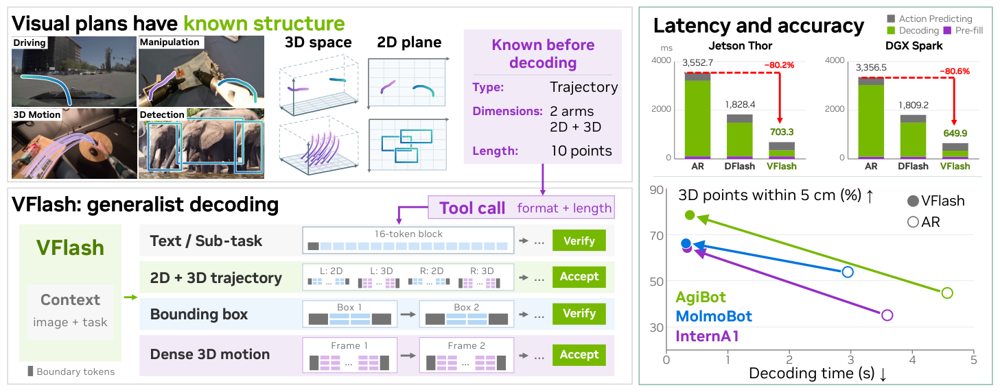
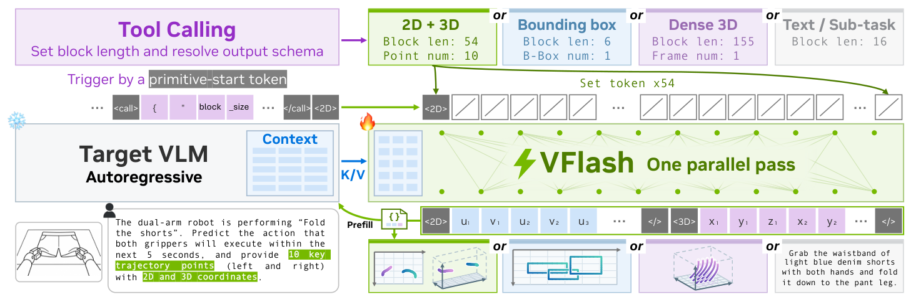
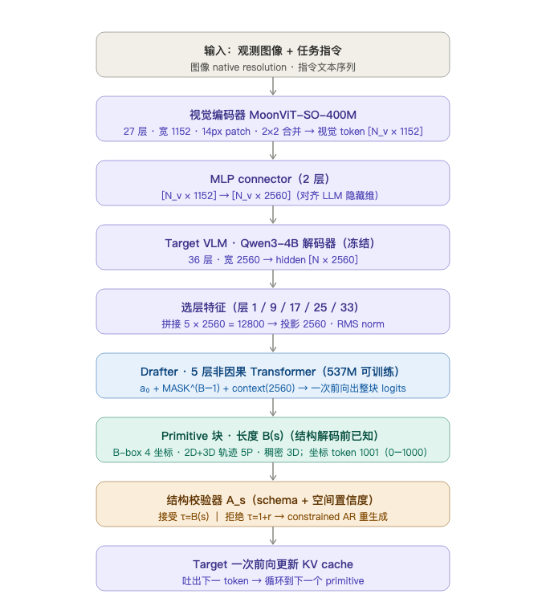

VFlash 深度调研笔记
速览
| 项 | 内容 |
|---|---|
| 一句话 | 把机器人/自动驾驶里的"视觉规划"（边界框、2D+3D 轨迹、稠密 3D 运动）从「逐 token 生成坐标」改成「一次并行生成整个几何 primitive」，用轻量 drafter 换掉自回归解码——提速 12–42×（端到端 ~5×）的同时精度反而更高（3D 轨迹误差最多降 61%）。 |
| 冻结 | Target VLM（Qwen3-4B + MoonViT）全程冻结，只出特征、做接受/回退 |
| 训练 | 仅 5 层非因果 drafter（537M 可训练参数），在冻结 target 特征上训练 |
| 定位 | 解码层革新：与 harness（系统层）、action 表示（token 层）正交；是 LocateAnything/Rex-Omni/MolmoMotion 这条"视觉 primitive"线的解码加速器 |

① 动机：为什么自回归解码卡住了 Physical AI
- 机器人/自动驾驶的"空间目标"（杯子在哪、机械臂走哪条路、未来点云怎么动）本质是几何，不是文本。但现有 VLM 用自回归解码生成坐标——一个航点一个航点吐，每条轨迹要走 B−1 次 target 前向。
- 越丰富越慢：NAVSIM 要 8 航点（4 秒）、Waymo 要 20 航点（5 秒），坐标逐 token 生成，解码成为主导延迟（Thor 上 AR 解码占模型阶段 75–87%）。
- 级联误差：自回归里前面坐标写错无法回改，误差一路累积，3D 轨迹里致命。
- token 对齐 ≠ 空间精度：投机解码要求 drafter 和 target 逐 token 一致，但这和"空间上对不对"是两回事——一个坐标 token 猜错就被拒绝，即使整条轨迹形状是对的。
② 架构：drafter + target 的分工

观测 x + 指令 ↓ 冻结 target VLM（p_θ）前向，取中间层特征 H_θ(x) ↓ 注入 drafter（q_φ）作为 KV ↓ 遇到 primitive 起始 token → 触发一个完整 primitive 块（长度 B(s)） ↓ drafter 一次并行前向，预测整个块的所有坐标 ↓ 结构校验器 A_s（schema + 空间置信度）→ 直接接受 / 回退 AR ↓ target 一次前向更新 cache、吐下一个 token
| 原则 | 解决什么 | 做法 |
|---|---|---|
| 边界对齐 | 固定窗口把 primitive 切碎 | 每个解码块覆盖一个完整 primitive，工具调用声明长度 |
| 位置对齐 | 坐标值 token 数不固定会错位 | 专用坐标 token 或定宽数字字段，每个槽位含义固定 |
| 从几何结构学习 | 投机解码只学 token 一致 | 用标注的 primitive 坐标做监督，直接优化空间精度 |
②B 模型流程与各模块数据维度

| # | 模块 | 关键配置 / 维度 | 输出 |
|---|---|---|---|
| 1 | 输入 | 图像 native resolution · 指令文本 | — |
| 2 | 视觉编码器 MoonViT-SO-400M | 27 层 · 宽 1152 · 14px patch · 2×2 合并 | [N_v × 1152] |
| 3 | MLP connector | 2 层 | [N_v × 1152] → [N_v × 2560] |
| 4 | Target VLM · Qwen3-4B（冻结） | 36 层 · 宽 2560 | hidden [N × 2560] |
| 5 | 选层特征 | 层 1/9/17/25/33 | 拼接 12800 → 投影 2560 · RMS |
| 6 | Drafter（537M 可训练） | 5 层非因果 · 32Q/8KV 头 · 头宽 128 · FFN 9728 | 整块 logits |
| 7 | Primitive 块 | B-box 4 · 2D+3D 轨迹 5P · 稠密 3D | B(s) 个 token |
| 8 | 结构校验器 A_s | schema + 空间置信度 guard | 接受 / 回退 |
③ 训练：冻结 VLM，只训 drafter
- 两阶段：先让 AR VLM 适配空间响应格式（next-token 监督），然后冻结 VLM，只训 shallow 非因果 drafter。
- 损失（加权交叉熵）：
L_prim = -Σ_j w_j log q_φ,j(a_j | H_θ(x), a_0, MASK^(B-1))，所有位置 logit 一次前向算完（并行）。 - primitive 位置用均匀权重（不像投机解码的衰减权重偏袒早期位置）。
- 关键：标签 a_j 来自标注坐标 / 渲染网格，而不是 target 的续写——优化的是空间精度，不是 token 一致。
- 打包注意力（packed attention）：一个 batch 里多个样本、多个独立块互不干扰，但每个 primitive 内部保留注意力。
④ 数据：一条"视觉 primitive"长什么样
| Primitive | Layout |
|---|---|
| 边界框 | <box> u1 v1 u2 v2 </> |
| 2D+3D 轨迹 | <2D> (u v)×P </> <3D> (x y z)×P </> |
| 稠密运动 | <Dense> t1 t2 [k (s d1..d5)×3]×P </> |
- 特殊坐标 token（主模型）：每个坐标 1 个位置，从 1001 个专用 token（0–1000）里取；定宽数字字段（text-tokenized 目标如 Qwen）：符号 + 5 位数字，高位空位填 MASK。
- 数据来源：2D 轨迹 ShareRobot-Bench + VABench-V；3D 轨迹 InternA1/AgiBot/MolmoBot；稠密运动 PointMotionBench（DAVIS/HOT3D/WorldTrack）；边界框 COCO + Dense200。
④A 主结果对比（论文表 2–8、11、12）
视觉 primitive 预测（上游）：
| 任务 | 数据集 | 关键结果 |
|---|---|---|
| 2D 轨迹 | ShareRobot-Bench, VABench-V | 全 6 指标下降；HD −7%，DFD/RMSE −3~6%；VABench-V 相对最强基线 LoHo-Manip 再降 40% |
| 边界框 | COCO, Dense200 | F1 均值持平，2.6–2.8× 吞吐；IoU 0.5 更高、0.95 略低 |
| 3D 轨迹 | InternA1, AgiBot, MolmoBot | ADE −18~61%；AgiBot 5cm 准确率 50%→73%（3D）/ 40%→74%（2D+3D） |
| 稠密 3D 运动 | PointMotionBench | DAVIS ADE/FDE −27%/−19%；~25× 单次生成加速 |
下游应用：
| 应用 | 结果 |
|---|---|
| MolmoSpaces 操作（WAM） | 70.2% vs baseline 62.6%、AR 计划 61.0%、最强公开模型 PrimeR0 60.3%；Pick&Place +11.6、Close +12.8 |
| LIBERO | LIBERO 93.4→94.2、LIBERO-Plus 60.7→62.6、LIBERO-PRO 40.2→47.0（+6.8） |
| 自动驾驶 | NAVSIM/Waymo 竞争力持平 + 解码延迟大降 |
延迟（batch=1）：
| 平台 | AR | VFlash | 降幅 |
|---|---|---|---|
| Jetson Thor | 3552.7 ms | 703.3 ms | −80.2% |
| DGX Spark | 3356.5 ms | 649.9 ms | −80.6% |
解码阶段加速 12–42×，端到端机器人推理 ~5.1×，NAVSIM 推理 >3×。
④B 核心消融（论文表 7，MolmoSpaces）
- VFlash 2D+3D 计划 70.2 > 3D-only 69.3 > 图像上下文 63.7 > AR 生成 2D+3D 61.0；
- 视觉几何信息在语言之外提供了额外价值：用轨迹特征替代图像特征 +6.5pp；VFlash 计划 vs AR 计划 +9.2pp；
- 边界框 IoU 0.95 上 F1 反而不如 AR——直接接受在"结构有效但空间错"时没有 target 逐 token 兜底（靠 schema + 空间置信度粗校验）。
⑤ 信息流（一次解码走一遍）
图像 + 指令 → target VLM 前向（prefix，算一次）→ 特征 H_θ(x) → drafter 以 16 位置 DFlash 块跑文本，直到 primitive 起始 token 被接受 → 解析 schema，确定块长 B(s) → drafter 一次并行前向，预测 B(s)−1 个坐标（所有 logit 同时算） → 每位置约束 + 跨位置规则，都在 logit 上做，不加神经计算 → 结构校验 A_s：schema 校验 + 边界框空间置信度守卫（LocateAnything） → 接受 τ_dir=B(s)；拒绝保留前 r 个，其余约束 AR 回退 → target 一次前向更新 cache + 特征，吐下一个 token
延迟公式：L_dir = (t_par + t_target) / B(s)，对比自回归每坐标一次 target 前向 t_target——次数不随 B(s) 增长，所以"更详细的计划不增加顺序解码步数"。
⑥ 例子：一条 10 航点 2D+3D 轨迹
- AR 做法：10 航点 × (2D 2 坐标 + 3D 3 坐标) + 分隔符 ≈ 54 token，54 次 target 前向逐 token 生成。
- VFlash 做法：工具调用声明 P=10 → 布局确定（54 token 块）→ drafter 1 次并行前向出整块 → 结构校验通过 → 1 次 target 前向接受整块。
- 结果：54 次顺序前向 → 1 次 drafter 并行 + 1 次 target，解码从 3552.7ms 降到 703.3ms（Thor）。
⑦ 实验与地位 / 局限
- 解码层革新：不训新 VLM 主体，只换解码器，与 harness（系统层）、action 表示（token 层）正交。
- "结构先验 + 直接接受" 是对投机解码的泛化：对几何输出，token 一致是错的优化目标，结构有效才是对的接受准则。
- 局限：精度上限受 drafter 结构约束（IoU 0.95 回退）；需要标注 primitive 数据；文本/子任务仍走验证投机解码；结果以基准为主，真实环境待观察；稠密运动部分指标（WorldTrack FDE +15%）不如 AR。